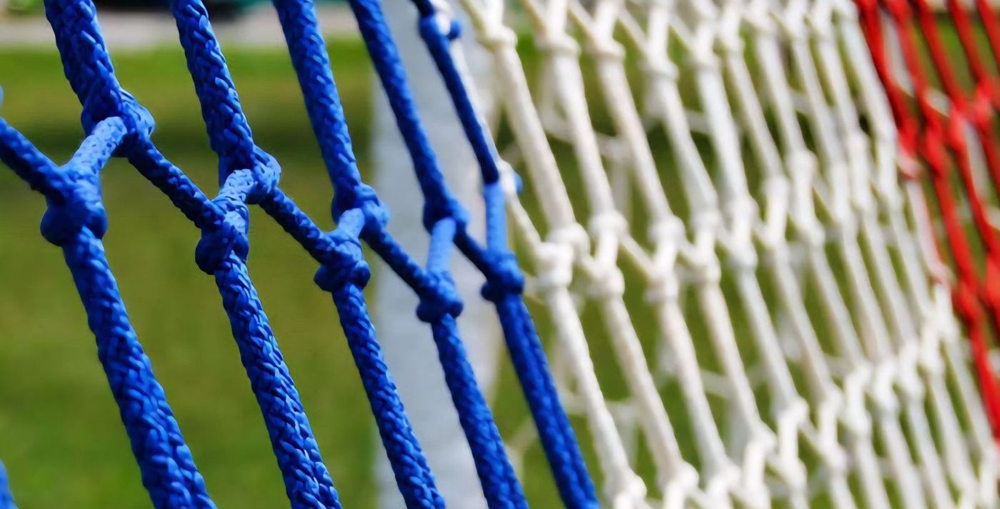
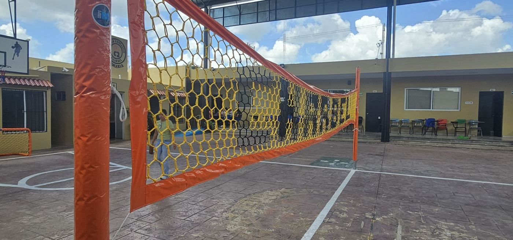
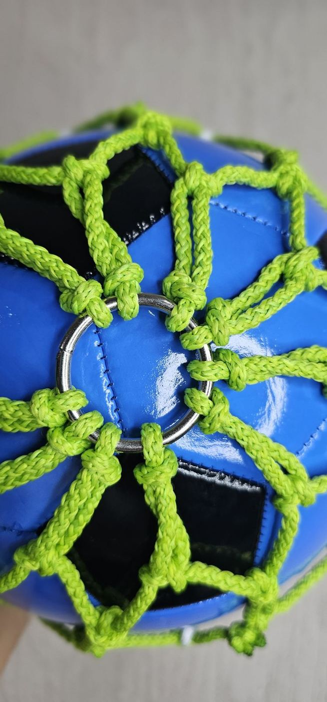

Por tipo de producto


Nuestros productos
Redes Perimetrales
Red negra de nylon alquitranado para cerrar canchas y espacios.
Porterías de Fútbol
Porterías completas con red hexagonal tipo colmena.

Redes para Porterías
Red hexagonal de poliéster trenzado para tu portería.

Redes de Voleibol y Básquetbol
Redes de juego, personalizadas con letras y colores.

Baloneras
Bolsas de red trenzada para guardar y transportar balones.
Jaulas de Bateo
Jaula completa o solo la red de 1" para béisbol y sóftbol.
Redes de Protección
Anticaídas, obra, techos de red y control de aves.